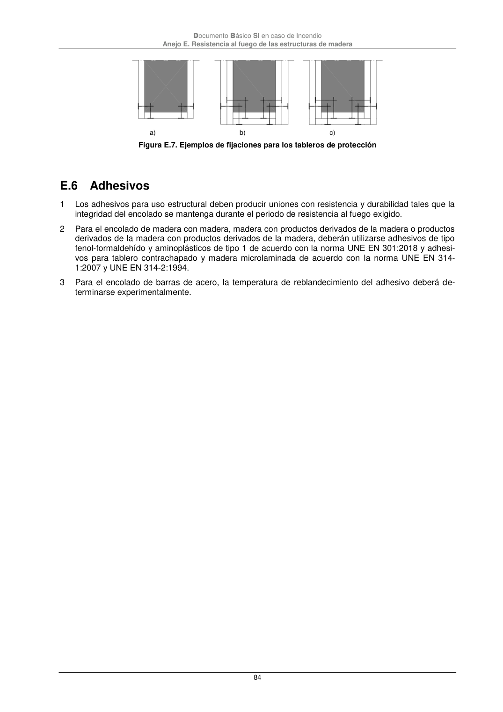

DB-SI Seguridad en caso de incendio · edición 2025-03-04 · capa oficial
Documento DB-SI-oficial · SHA-256 del PDF 0a2e78cd62471d9cc5cfe2efbc6aa39fdbad73c124aea7b039f9de96c141e105
Página física 84 de 92.
Copia fiel del PDF fuente · Fuente oficial
Ficha de la disposición en la fuente oficial
Formato: Texto de la página (Markdown)
Documento Básico SI en caso de Incendio Anejo E. Resistencia al fuego de las estructuras de madera 84 a) b) c) Figura E.7. Ejemplos de fijaciones para los tableros de protección E.6 Adhesivos 1 Los adhesivos para uso estructural deben producir uniones con resistencia y durabilidad tales que la integridad del encolado se mantenga durante el periodo de resistencia al fuego exigido. 2 Para el encolado de madera con madera, madera con productos derivados de la madera o productos derivados de la madera con productos derivados de la madera, deberán utilizarse adhesivos de tipo fenol-formaldehído y aminoplásticos de tipo 1 de acuerdo con la norma UNE EN 301:2018 y adhesi- vos para tablero contrachapado y madera microlaminada de acuerdo con la norma UNE EN 314- 1:2007 y UNE EN 314-2:1994. 3 Para el encolado de barras de acero, la temperatura de reblandecimiento del adhesivo deberá de- terminarse experimentalmente.
